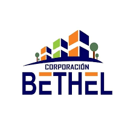

Acerca de coporación bethel
Cantidad*

Años
Cantidad*
Empleados
Cantidad*
Marcas
Historia de Coporacion Bethel
Corporación Bethel nació en el corazón de Lima, Perú, en el año 2010, como un pequeño negocio familiar con un gran sueño: brindar soluciones prácticas y de calidad para hogares, colegios, talleres y empresas. Con esfuerzo, compromiso y una visión clara, fuimos creciendo poco a poco hasta convertirnos en una distribuidora integral de productos de limpieza, útiles escolares, mercería y ferretería. El nombre "Bethel", que significa "Casa de Dios", refleja nuestros valores: trabajo honesto, servicio con integridad y compromiso con nuestras comunidades. Desde nuestros inicios, apostamos por ofrecer un trato cercano y confiable, manteniendo una relación sólida con nuestros clientes, desde pequeños emprendedores hasta grandes instituciones. Hoy, después de más de una década de experiencia, Corporación Bethel cuenta con un catálogo diverso y cuidadosamente seleccionado, que responde a las necesidades del mercado peruano. Abastecemos desde escobas, detergentes y materiales de oficina, hasta agujas, hilos, herramientas y artículos escolares para todas las edades. Gracias al apoyo de nuestros clientes y al esfuerzo constante de nuestro equipo, seguimos creciendo con la misión de ser una empresa referente en calidad, variedad y servicio personalizado en todo el Perú.
Nuestros Valores

Compromiso

Empatía

Respeto

Responsabilidad
Misión
Brindar soluciones integrales de abastecimiento en útiles de limpieza, escolares, mercería y ferretería, ofreciendo productos de calidad a precios accesibles, con un servicio ágil, confiable y personalizado, contribuyendo al desarrollo de nuestros clientes y al bienestar de sus comunidades en todo el Perú.
Visión
Ser reconocidos a nivel nacional como una empresa líder en distribución multisectorial, destacando por nuestra eficiencia, variedad de productos, compromiso con el cliente y aporte al crecimiento sostenible del país.